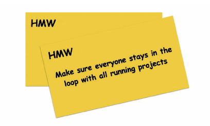

So, I got my hands on The Workshopper by Jonathan Courney, a book by Jonathan Courney, co-founder of AJ&Smart - the guys that helps big names like Lego, Google, and Twitter with product design, strategy, and training, but they're also nice enough to share their knowledge for free on YouTube, podcasts, and books (like this one).
The book tackles the usual problems associated with product design within teams, where rank, agenda, social anxiety, goals, etc., often lead to unclear and frustrating outcomes. Jonathan emphasizes the importance of active listening and using a facilitator to structure meetings. This helps participants focus on their "superpowers" instead of worrying.
facilitator, or workshopper, uses a framework called the four C's: Collect, Choose, Create, and Commit. This structure is similar to Design Thinking but in a workshop format that only takes about 40 minutes to complete. The book's purpose is to help readers become workshop facilitators using this framework.
The workshop format includes several steps, such as identifying present problems, selecting problems to solve, defining HMW (How Might We) challenges, producing solutions, voting on solutions, prioritizing solutions, and turning solutions into actionable tasks. The book recommends replacing open discussion or brainstorming with a structured process that leads to more ideas, clearer decisions, and better outcomes.
Overall, The Workshopper is an excellent resource for anyone who wants to improve their workshop facilitation skills. It provides valuable insights and practical advice on how to structure workshops effectively and efficiently.actually, i found it so helful that i decided to make a TDLR version of all the steps for myself, and who knows, maybe a reader.
In the future, I want to be a fulltime writer. Substack enable subscribers to support me through a subscription model.
Each Team member stand up at a wall/whiteboard to very quickly explain each problem as they stick them to the surface. Nobody else in the team is allowed to speak here.
Everybody must now vote on the challenges they consider to be the most pertinent to solve, without discussion the moderator quickly takes the voted problems and arranges them in order of priority.
The moderator should quickly rewrite all the problems as quickly as possible, making sure they are still prioritised before moving on. The top voted HMW problem will be used to produce solutions. If there are two just start with the one on the left. Don’t worry about it and do not discuss!
"Replace all open discussion or brainstorming with a structured process that leads to more ideas, clearer decisions and better outcomes."

we’re aiming for Quantity over Quality write as many possible ways to tackle the How Might We challenge without any discussion. Solutions don’t have to be written in any particular way– but they must be understandable to people reading.

The team now has 30 seconds to make a prioritised list of solutions — Ignore anything with the less than two votes.

we use a simple effort/impact scale to determine which solutions to try ASAP, and which should be added to a to-do list, or however you store your backlog. Effort, in this case is how much effort we as a team think it will take to implement impact is the degree to which we think it would solve our problem. The presenter recommends the book for anyone who wants to improve their workshop facilitation skills and believes that it provides valuable insights and practical advice.
the person who wrote the solution to give actionable steps toward testing the solution. When I say actionable, I really mean something that could be executed on in the timeframe of 1–2 weeks.